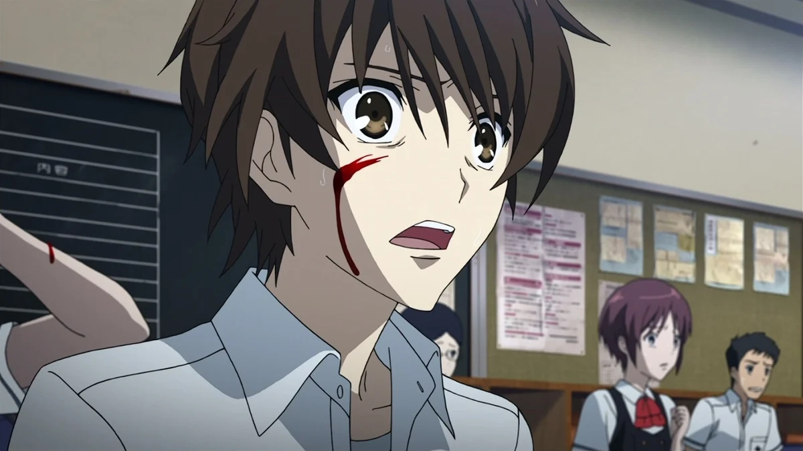
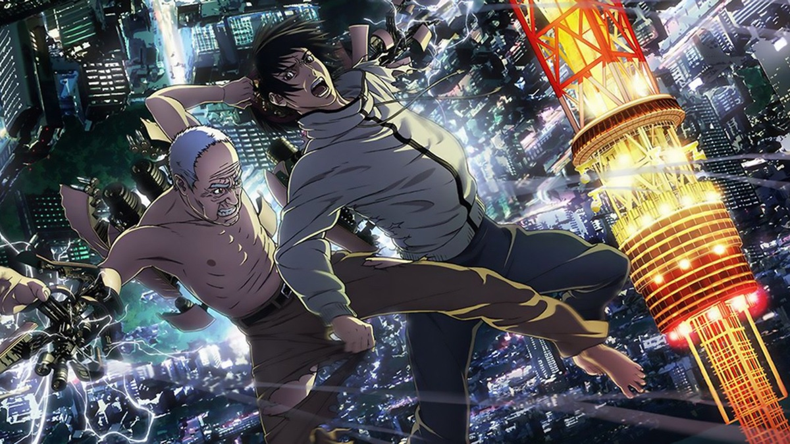
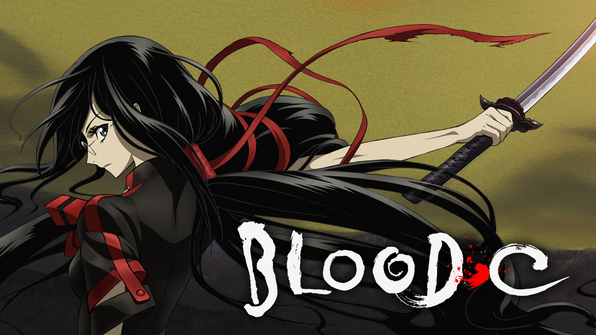
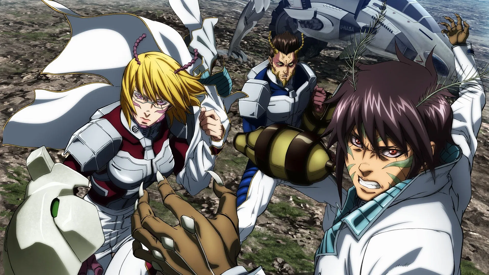
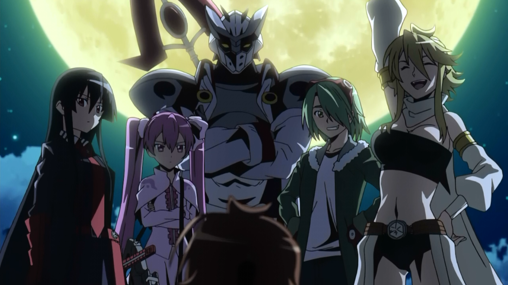
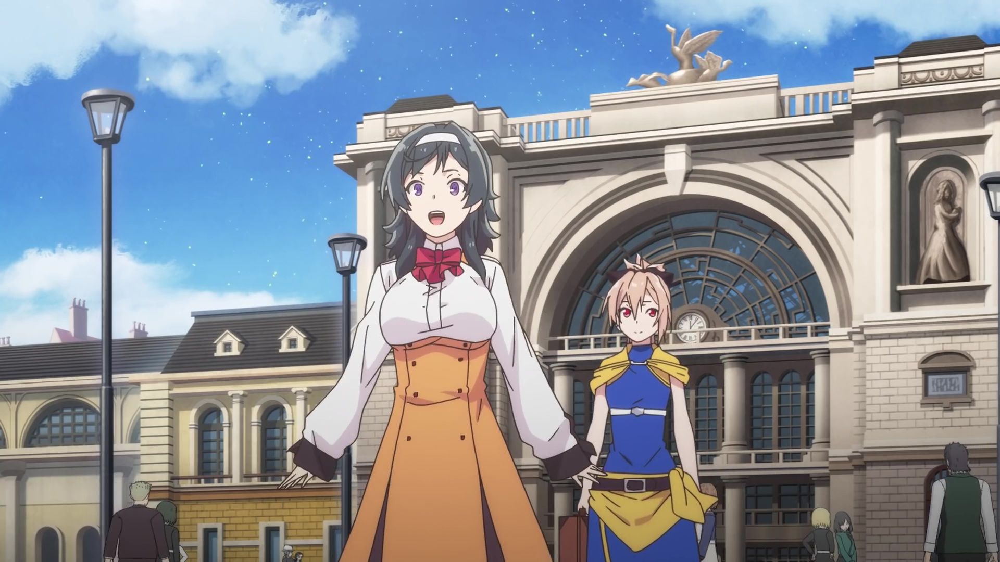
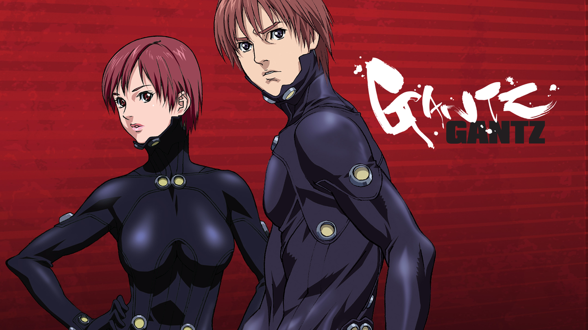
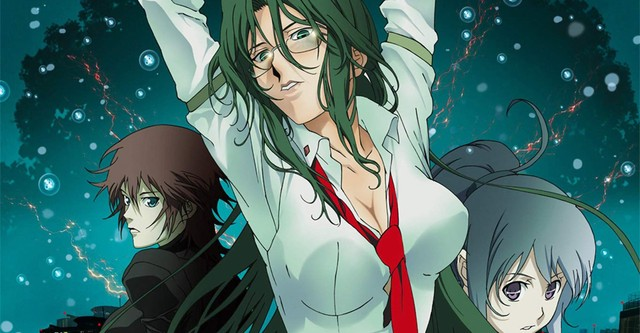

SMASH Senpai
Top 10 Anime With Insane Death Scenes That Traumatized Fans
Death in anime isn’t always heroic. Sometimes it’s sudden, unfair, and deeply disturbing — the kind of moment that hits without warning and stays in your mind long after the episode ends.
These aren’t clean, emotional goodbyes or dramatic final speeches. These are deaths that feel brutal, chaotic, and terrifyingly real. Characters are erased mid-sentence, torn apart without mercy, or forced to suffer in ways that feel genuinely cruel.
What makes these scenes unforgettable isn’t just gore — it’s how unexpected they are. No buildup. No protection for main characters. No guarantee that anyone is safe.
Some of these anime use extreme violence to shock. Others use silence, timing, and psychological horror to make death feel unavoidable. In every case, the impact is permanent.
These are the Top 10 Anime With Insane Death Scenes — moments so disturbing, sudden, or brutal that fans still talk about them years later.
Sponsored
#1 Another
Another is infamous for delivering some of the most sudden and shocking death scenes ever animated. What makes its violence so disturbing isn’t just the gore — it’s the complete lack of warning. Characters don’t get heroic build-ups, emotional speeches, or dramatic music cues before they die. Death simply arrives, fast and merciless.
Set around a cursed classroom, the anime turns everyday situations into lethal traps. Umbrellas, staircases, falling objects, and simple accidents become instruments of death. The randomness is what truly terrifies viewers. At any moment, a background character can be erased in seconds, often in ways so graphic that they feel burned into memory.
One of the reasons Another stands out is how it weaponizes shock value correctly. Deaths are not spread evenly or softened. Instead, the anime builds tension through silence and unease, then releases it through sudden, violent impact. These moments don’t feel cinematic — they feel cruel and unfair, which makes them hit harder.
Another’s death scenes became viral for a reason. They redefine how anime horror can work by removing safety nets entirely. No character feels protected, and once the killing starts, the viewer is conditioned to fear every quiet moment. It’s a masterclass in using unpredictability to traumatize an audience.
- Episode count: 12
- Genre: Horror, Mystery, Psychological
- Known for: Sudden, graphic, unavoidable deaths
- Core theme: Death can strike anyone, anytime

play anime smash or pass here (not sponsored)
SMASH SENPAI – Smash or Pass#2 Inuyashiki: Last Hero
Inuyashiki: Last Hero delivers some of the most disturbing death scenes in modern anime because of how casually and realistically they’re portrayed. The anime contrasts superhero-like abilities with horrifying consequences, showing how godlike power turns ordinary places into slaughter zones.
What makes the deaths in Inuyashiki so unsettling is scale. Entire families are erased in seconds. Crowded public spaces turn into execution grounds. The violence isn’t stylized or glorified — it’s presented coldly, often from the perspective of helpless victims. This makes each death feel painfully personal.
The antagonist’s killing spree is especially disturbing because of intent. Death isn’t accidental or emotional. It’s experimental, curious, and indifferent. People die simply because they exist in the wrong place at the wrong time. The anime lingers on reactions — fear, confusion, disbelief — rather than the action itself.
Inuyashiki stands out by making death feel permanent and cruel. There’s no reset, no undo button, and no emotional cushioning. The anime forces viewers to confront how fragile life is when power is placed in the wrong hands. Its death scenes are unforgettable because they feel disturbingly possible.
- Episode count: 11
- Genre: Sci-Fi, Psychological, Drama
- Known for: Brutal mass deaths and emotional realism
- Core theme: Power without morality destroys everything
#3 Higurashi: When They Cry

Higurashi: When They Cry is infamous for death scenes that feel deeply personal, cruel, and psychologically suffocating. Unlike anime that rely on shock alone, Higurashi builds emotional attachment before tearing it apart violently. This makes every death feel like a betrayal.
The anime’s rural setting creates a false sense of safety. Friendly faces, peaceful festivals, and innocent conversations slowly give way to paranoia, madness, and extreme violence. Deaths are often intimate — involving close friends, family members, and people who trusted each other moments earlier.
What truly sets Higurashi apart is repetition. Death is not a single shocking moment — it’s something characters experience again and again, each time more horrifying than the last. Brutal murders, torture, and psychological breakdowns are shown with uncomfortable closeness.
Higurashi’s death scenes linger because they attack both body and mind. The violence is raw, the suffering is prolonged, and the emotional damage carries over between arcs. It’s not just about watching characters die — it’s about watching them lose their sanity before it happens.
- Episode count: 26 (Season 1)
- Genre: Horror, Mystery, Psychological
- Known for: Repeated brutal murders and mental collapse
- Core theme: Violence fueled by paranoia and despair
#4 Corpse Party

Corpse Party is one of the few anime that became notorious almost entirely because of how brutally it depicts death. From the very first episode, the anime makes it clear that no one is safe — not even children. Death in Corpse Party is sudden, graphic, and relentlessly cruel.
Set inside a cursed elementary school, the anime traps its characters in a nightmare where escape feels impossible. What makes the death scenes so disturbing is their intimacy. Characters don’t die heroically or quickly. They are stalked, tortured, mutilated, and often killed while screaming for help that never comes.
Corpse Party doesn’t cut away when things get uncomfortable. It lingers on broken bodies, severed limbs, and the psychological terror of realizing death is inevitable. Many scenes push far beyond what’s typically shown in anime, making the violence feel closer to extreme horror films than animation.
The anime gained its reputation because it refuses to soften anything. Death is not symbolic or poetic — it’s ugly, painful, and permanent. Corpse Party’s legacy is built on how far it was willing to go, and why many viewers still consider it one of the most traumatizing anime ever made.
- Episode count: 4 (OVA)
- Genre: Horror, Supernatural, Gore
- Known for: Extremely graphic deaths involving children
- Core theme: Hopeless survival horror
Sponsored
#5 Blood-C
Blood-C is infamous for pushing on-screen violence far beyond what most anime viewers are prepared for. What begins as a seemingly normal monster-hunting story quickly descends into relentless bloodshed where death is exaggerated, cruel, and often grotesquely creative.
The anime is filled with scenes of dismemberment, bodies torn apart, and characters being killed in ways that feel intentionally excessive. Limbs are ripped off, heads are crushed, and civilians are slaughtered en masse. The deaths are not quick — they are prolonged, painful, and designed to shock.
One of Blood-C’s most disturbing elements is contrast. The main character maintains an innocent demeanor while the world around her collapses into carnage. This emotional disconnect makes the violence feel even more unsettling, as cheerful moments are followed by brutal executions without warning.
Blood-C became controversial not just for its gore, but for how unapologetic it was. There’s no attempt to justify or soften the violence. The anime exists to overwhelm the viewer, turning death into spectacle while stripping away comfort. For many, Blood-C crossed a line — and that’s exactly why it remains unforgettable.
- Episode count: 12
- Genre: Horror, Action, Gore
- Known for: Excessive violence and graphic dismemberment
- Core theme: Brutality without restraint
#6 Terra Formars (Season 1)
Terra Formars shocked viewers by killing off characters almost as soon as they were introduced. Unlike anime that build long emotional arcs before death, Terra Formars turns death into a constant, unpredictable presence that strikes without warning.
Set on a hostile Mars, the anime pits genetically enhanced humans against grotesque alien creatures. The deaths are brutal and sudden — heads crushed, bodies ripped apart, and characters erased in seconds. Often, a character’s backstory is revealed moments before they’re violently killed.
This structure creates a unique sense of dread. Emotional investment becomes a liability. The moment you begin to care about someone, the anime reminds you that survival is never guaranteed. The violence feels cold and efficient, emphasizing how meaningless individual lives are in the face of extinction.
Terra Formars stands out because it treats death as routine. There are no dramatic pauses or heroic sacrifices — just overwhelming force and brutal consequences. Season 1, in particular, earned its reputation for relentless shock value and hopeless atmosphere, cementing it as one of anime’s most lethal viewing experiences.
- Episode count: 13 (Season 1)
- Genre: Sci-Fi, Action, Horror
- Known for: Sudden character deaths and extreme brutality
- Core theme: Humanity’s fragility against overwhelming threats
#7 Akame ga Kill
Akame ga Kill built its reputation by doing something most anime refuse to do — killing off major characters without hesitation. From early on, the series establishes a brutal rule: no one is safe, no matter how important they seem.
The anime follows a group of assassins fighting a corrupt empire, but instead of glorifying heroism, it emphasizes the cost of rebellion. Deaths are sudden, violent, and emotionally punishing. Characters with full arcs, dreams, and relationships are wiped out in seconds, often in battles that feel hopeless from the start.
What makes Akame ga Kill’s death scenes hit so hard is how personal they feel. Viewers are encouraged to grow attached, only to have that attachment ripped away. Many deaths occur just as characters achieve growth or clarity, reinforcing the idea that justice doesn’t protect anyone.
The anime’s willingness to eliminate nearly its entire cast turned it into one of the most shocking experiences for viewers. Akame ga Kill isn’t about survival — it’s about sacrifice, and the devastating reality that even noble causes are built on blood.
- Episode count: 24
- Genre: Action, Dark Fantasy, Drama
- Known for: Killing main characters unexpectedly
- Core theme: Revolution demands sacrifice
#8 The Executioner and Her Way of Life
The Executioner and Her Way of Life shocked audiences by killing its apparent protagonist in the very first episode. This single moment redefined expectations and set the tone for an anime where death is deliberate, calculated, and morally complex.
Set in a world where summoned heroes possess dangerous powers, the anime explores a society that has decided some people must die for the greater good. Deaths aren’t chaotic or emotional outbursts — they are executions, carried out with calm efficiency and conviction.
What makes the deaths unsettling is the lack of hesitation. Characters are eliminated not because they’re evil, but because their existence is considered a threat. The anime forces viewers to confront a harsh idea: sometimes survival requires preemptive murder.
Rather than relying on gore, the series focuses on psychological weight. Death feels cold and systematic, stripping away the fantasy of heroism. The Executioner and Her Way of Life stands out by turning death into policy — and asking whether morality survives when killing becomes necessary.
- Episode count: 12
- Genre: Fantasy, Psychological, Dark
- Known for: Killing the protagonist immediately
- Core theme: Moral justification of execution
#9 Gantz
Gantz treats death as meaningless. Characters are thrown into lethal missions where survival depends on luck as much as skill. From the start, the anime makes it clear that death is random, cruel, and unavoidable.
Unlike traditional battle anime, Gantz offers no hero protection. Characters die violently, often mid-sentence, without dramatic buildup. Heads explode, bodies are torn apart, and mistakes are punished instantly.
What separates Gantz from similar series is its realism. People panic, freeze, make selfish choices, and get killed because of it. Death doesn’t feel cinematic — it feels messy, sudden, and unfair.
Gantz became infamous for how uncomfortable it makes viewers feel. There is no moral balance, no guarantee of justice, and no reward for bravery. It presents death as a consequence of existence itself, making it one of anime’s most nihilistic experiences.
- Episode count: 26
- Genre: Action, Horror, Psychological
- Known for: Sudden, realistic character deaths
- Core theme: Death without meaning or mercy
#10 Rin: Daughters of Mnemosyne
Rin: Daughters of Mnemosyne is disturbing not because of how often characters die, but because of how death is portrayed as slow, brutal, and deeply personal. Violence in this anime is intimate — designed to unsettle rather than shock.
The series blends crime, immortality, and psychological horror, creating death scenes that linger uncomfortably. Characters are tortured, executed, and psychologically broken long before they actually die. Pain is prolonged, and suffering is treated as part of existence.
What makes Rin especially difficult to watch is its emotional detachment. Death is not heroic or tragic — it’s routine. Characters endure extreme violence, only to be discarded without ceremony.
The anime earned its reputation because it strips away fantasy. Death isn’t an endpoint — it’s a process. Rin remains one of the most unsettling anime experiences, leaving viewers disturbed not by gore, but by how calmly it portrays human cruelty.
- Episode count: 6 (OVA)
- Genre: Psychological, Horror, Crime
- Known for: Brutal, intimate violence
- Core theme: Suffering as a constant state
Play Smash or Pass on SMASH Senpai.
 PLAY SMASH OR PASS
PLAY SMASH OR PASS